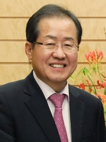

Hong Joon-pyo también referido como Hong Jun-pyo, es un político y antiguo fiscal surcoreano quien sirve como miembro de la Asamblea Nacional. Fue gobernador de la Provincia de Gyeongsang del Sur, y lider del partido conservador Partido Libertad de Corea en el 2011 y posteriormente presidió al partido desde 2017 a 2018.
Hong Joon-pyo Nació en Changnyeong-gun Provincia de Gyeongsang del Sur. Se graduó en la Escuela Yeungnam High School y se graduó como Administrador Público en la Universidad de Corea.
Hong fue por primera vez electo como gobernador de la Provincia de Gyeongsang del Sur en el 2012, siendo reelecto para el mismo cargo en el año 2014. Hong corrió para las primarias presidenciales del Partido del Poder Popular quedando en segundo lugar, perdiendo contra Yoon Seok-youl.
Hong sostiene que se debe mantener un enfoque activo y vigilante en relación con la seguridad nacional, bajo el concepto de "paz armada". Además apoya el empleo del Terminal High Altitude Area Defense(THAAD ) de los Estados Unidos.
Hong ha indicado públicamente que él cree que el VIH y el sida son el resultado de la homosexualidad, una estrategia en búsqueda de atraer el apoyo de los polos más conservadores de la sociedad. En un debate presidencial televisado, criticó a Moon Jae-in en relación con la postura favorable de este último en relación con la homosexualidad, además de señalar que los soldados gay eran vistos como una fuente de debilidad para el ejército coreano.